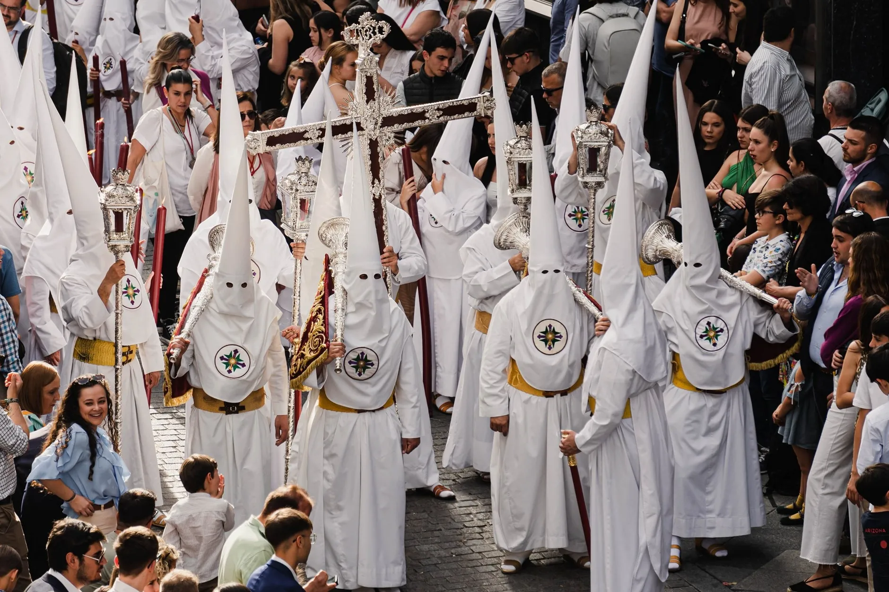
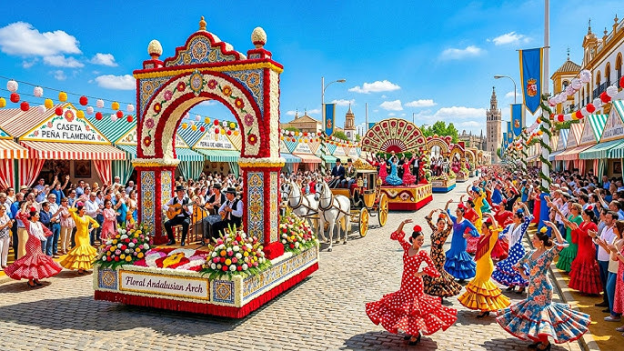
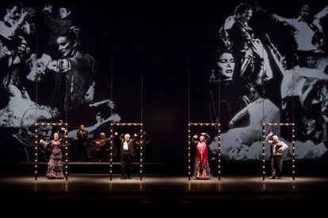
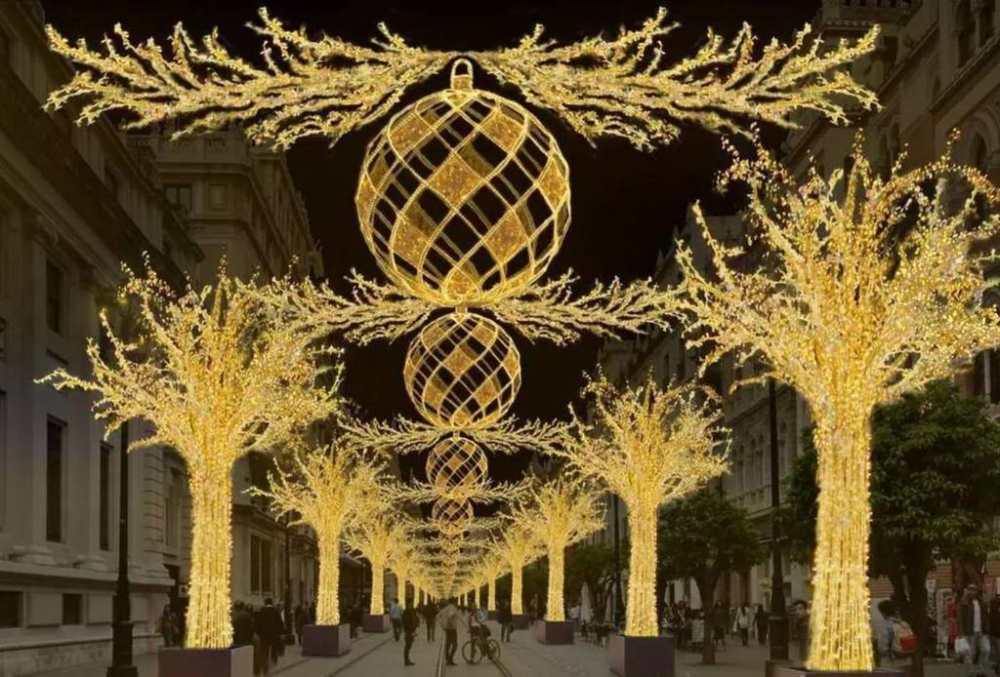

Ritme Hidup
Andalusia
Dari kekhusyukan prosesi lilin malam hari hingga ledakan warna gaun flamenco di bawah sinar matahari musim semi, festival Sevilla adalah perayaan jiwa manusia yang tak tertandingi.
Kalender Perayaan Akbar Tahunan

Religius & SakralSemana Santa
Prosesi spiritual agung yang menggerakkan seluruh kota, menampilkan boks-boks suci antik abad pertengahan.

Sukacita & BudayaFeria de Abril
Pekan kegembiraan Sevilla dengan ribuan tenda, gaun flamenco tradisional, dan tarian sevillanas.

Seni Musik & TariBienal di Flamenco
Festival seni tari dan musik gitar Flamenco paling bergengsi di dunia.

Tradisi Musim DinginNavidad en Sevilla
Sevilla bersinar dalam magis lampu natal, pasar tradisional, dan nyanyian jalanan.
Panduan Penting
Menghadiri Fiesta
-
01
Reservasi Akomodasi Jauh Hari
Saat Semana Santa dan Feria de Abril berlangsung, ratusan ribu turis memadati Sevilla. Pesan hotel atau apartemen minimal 4–6 bulan sebelum festival dimulai karena harga bisa melonjak hingga tiga kali lipat.
-
02
Pahami Aturan Berpakaian (Dress Code)
Menghadiri Semana Santa menuntut rasa hormat yang tinggi. Warga lokal biasanya mengenakan pakaian formal atau rapi (setelan jas atau gaun gelap). Hindari memakai celana pendek atau pakaian kasual yang terlalu santai saat prosesi suci.
-
03
Manfaatkan Transportasi Publik
Banyak area jalanan di pusat kota tua akan ditutup total selama festival untuk rute parade. Menggunakan taksi atau menyewa mobil sangat tidak disarankan. Manfaatkan jaringan Metro Sevilla yang beroperasi 24 jam penuh selama pekan Feria.
Untuk memahami orang Sevilla, kamu harus melihat mereka merayakan festivalnya. Di sana, batas antara kedukaan religius dan sukacita duniawi menguap begitu saja.
Antonio Machado, Pujangga Klasik Andalusia